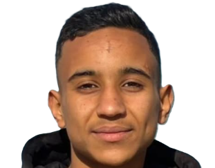
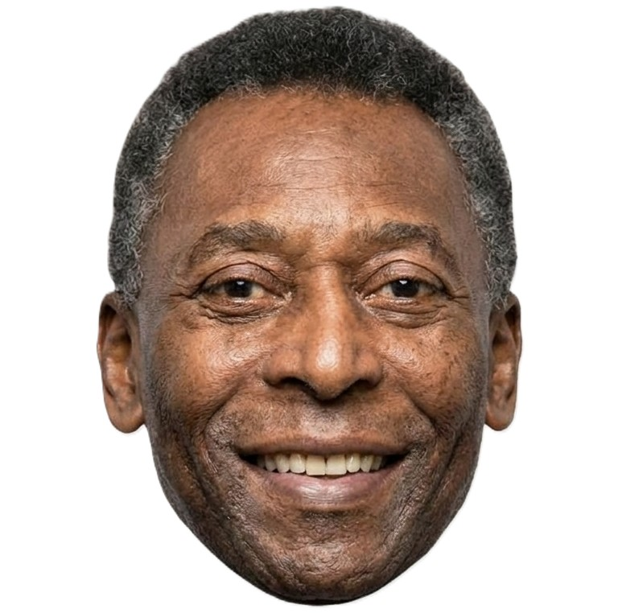

A fictional, dramatized interview created for a school project. This is a dramatized presentation rather than a real recording.
python -m http.server), click Record & Download Video, pick Current Tab, and check Share tab audio.